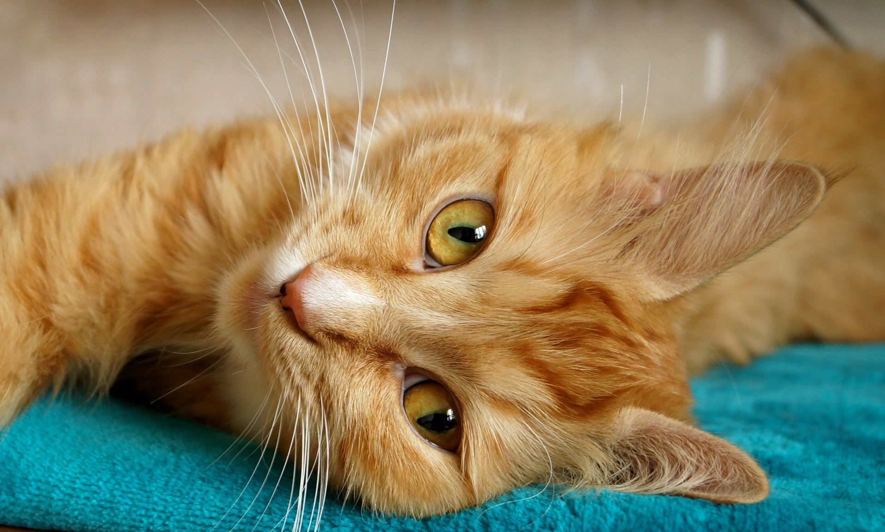
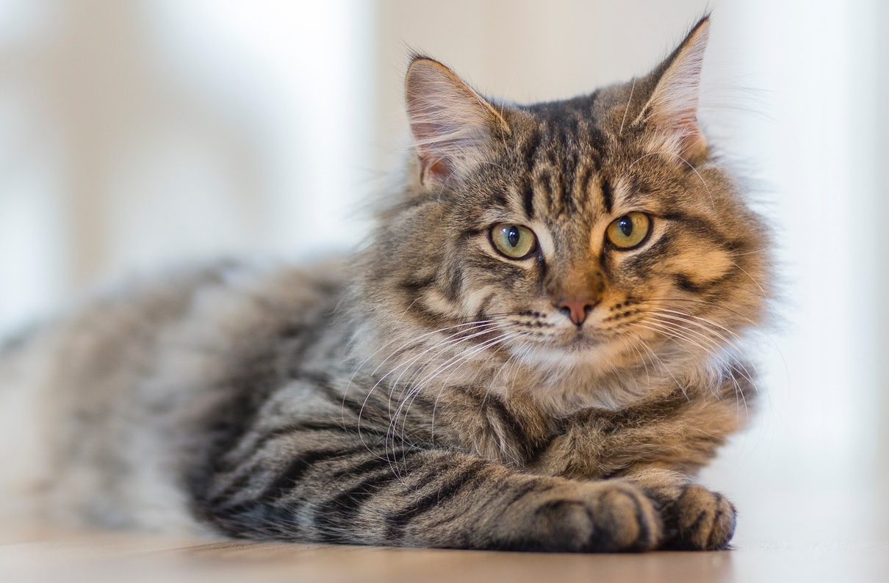
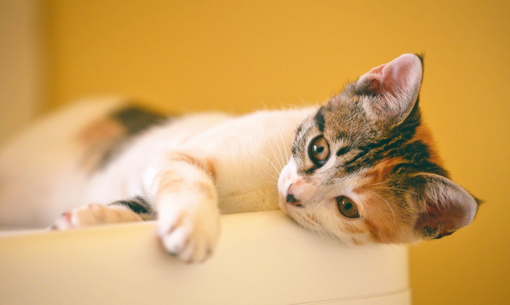
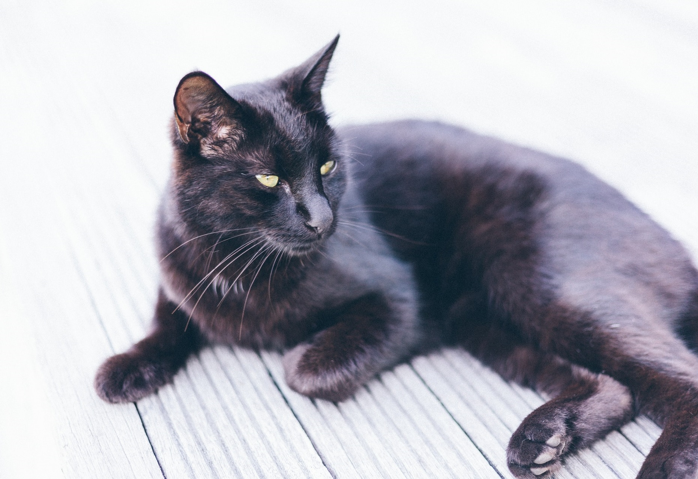

Sandy / 3 years / female
Sandy is a real outdoors type of cat during the day, in the afternoon she comes indoors for food and cuddles.

Zyra / 4 years / female
Zyra is quite a lazy cat, you often find her napping during the day. She was brought in as a stray.

Draven / 1 years / male
Draven was resqued from a bad household, but is in good health. Like any kitten, he is very playful and active.

Crisp / 3 years / female
Crisp is a typical house cat, she doesn't go outside at all. She is very attention seeking and cuddly.